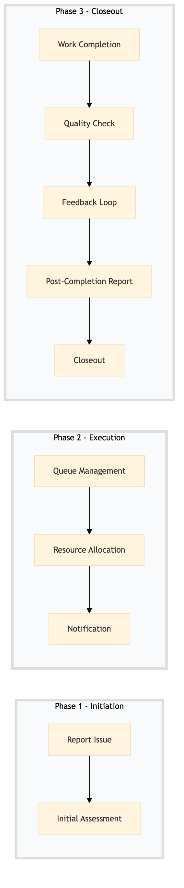

| Role | Steps |
|---|---|
| Guest Services Agent | 1.1 |
| Facilities Engineer | 1.2 2.3 3.1 3.3 3.5 |
| Facilities Manager | 2.1 2.2 3.2 3.4 |
| Step | Name | Role | System | Input | Output | KPI | Dec? | Exc? | Pain Point / Risk |
|---|---|---|---|---|---|---|---|---|---|
| 1.1 | Report Issue | Guest Services Agent | Oracle OPERA Cloud | Guest report or staff observation | Work order created in Oracle OPERA Cloud | Less than 5 minutes to log the issue | N | Y | Delays in reporting issues due to system downtime |
| 1.2 | Initial Assessment | Facilities Engineer | Oracle OPERA Cloud | Work order details | Assessment notes and priority level assigned | Less than 10 minutes to assess the issue | Y | N | Inconsistent prioritization criteria |
| 2.1 | Queue Management | Facilities Manager | Oracle OPERA Cloud | Work order with priority level | Work order placed in appropriate queue | Less than 3 minutes to queue the work order | N | Y | Overloaded queues causing delays |
| 2.2 | Resource Allocation | Facilities Manager | Oracle OPERA Cloud | Queue status and technician availability | Technician assigned to work order | Less than 5 minutes to assign a technician | Y | N | Skill mismatches between issues and technicians |
| 2.3 | Notification | Facilities Engineer | Oracle OPERA Cloud | Assigned work order | Notification sent to technician | Less than 1 minute to send notification | N | Y | Technician not receiving notifications |
| 3.1 | Work Completion | Facilities Engineer | Oracle OPERA Cloud | Completed work order details | Work order marked as completed in Oracle OPERA Cloud | Less than 20 minutes to complete the work order | N | Y | Inaccurate completion times |
| 3.2 | Quality Check | Facilities Manager | Oracle OPERA Cloud | Completed work order | Work order approved or re-assigned | Less than 5 minutes to review the work order | Y | N | Poor quality of work leading to re-assignments |
| 3.3 | Feedback Loop | Facilities Engineer | Oracle OPERA Cloud | Work order review outcome | Feedback recorded in Oracle OPERA Cloud | Less than 2 minutes to record feedback | N | Y | Lack of feedback leading to recurring issues |
| 3.4 | Post-Completion Report | Facilities Manager | Oracle OPERA Cloud | Work order details | Post-completion report generated | Less than 10 minutes to generate the report | N | Y | Inadequate reporting affecting future planning |
| 3.5 | Closeout | Facilities Engineer | Oracle OPERA Cloud | Post-completion report | Work order closed in Oracle OPERA Cloud | Less than 2 minutes to close the work order | N | Y | Delayed closure affecting system integrity |
This process outlines how reactive maintenance work orders are prioritized and assigned at a full-service Marriott hotel using Oracle OPERA Cloud PMS.